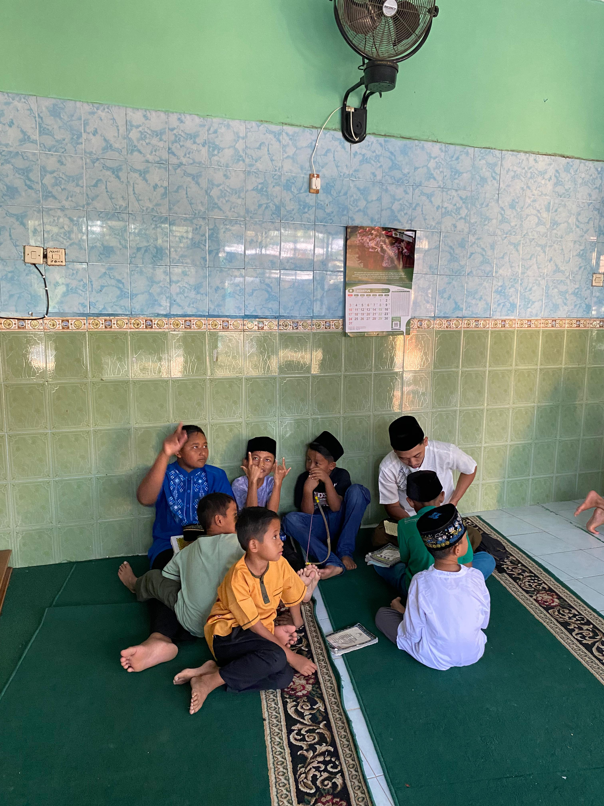
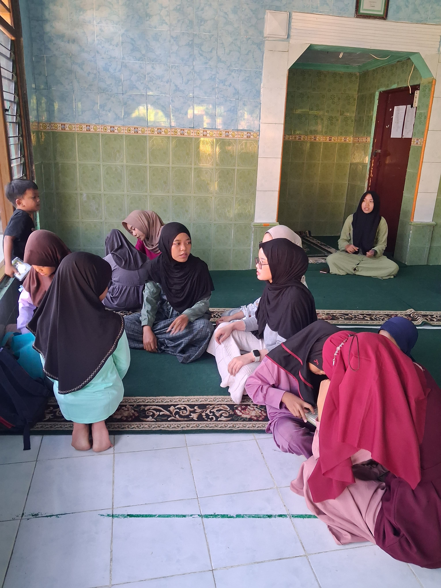

Belajar Mengaji: Menanamkan Kemampuan Membaca Al-Qur’an dan Membentuk Karakter Anak
Gunungkidul – Kegiatan belajar mengaji yang rutin dilaksanakan bersama anak-anak di wilayah Siyono Wetan menjadi salah satu bentuk nyata upaya menanamkan nilai keagamaan sejak dini. Kegiatan ini diikuti oleh sekitar 25 anak dengan antusiasme yang tinggi.
Sejak hari pertama, anak-anak tampak bersemangat mengikuti kegiatan. Pembelajaran diawali dengan pembagian kelompok sesuai kemampuan, mulai dari tingkat dasar yang baru mengenal huruf hijaiyah, hingga tingkat lanjutan bagi anak-anak yang sudah lancar membaca ayat-ayat pendek. Pendekatan ini memudahkan proses belajar, karena setiap anak mendapatkan pendampingan sesuai dengan kebutuhan mereka.
Suasana belajar pun dibuat menyenangkan. Mahasiswa KKN tidak hanya mengajarkan membaca Al-Qur’an dengan metode konvensional, tetapi juga menyelipkan cara-cara kreatif agar anak-anak tetap fokus. Misalnya, anak diajak membaca secara bergiliran, diberi tantangan kecil untuk mengingat huruf tertentu, bahkan ada permainan edukatif sederhana agar anak tidak merasa jenuh. Selain itu, setiap akhir pertemuan, anak-anak diberi kesempatan untuk menyetorkan hafalan surat pendek, sehingga motivasi belajar mereka semakin meningkat.
Kegiatan ini tidak hanya memberikan manfaat bagi anak-anak, tetapi juga mendapat dukungan penuh dari para orang tua. Banyak wali murid merasa terbantu karena anak-anak mereka lebih bersemangat belajar mengaji ketika bersama teman-temannya, dibandingkan saat belajar sendiri di rumah. Beberapa orang tua bahkan menyampaikan bahwa setelah mengikuti kegiatan ini, anak-anak lebih rajin membuka Al-Qur’an di rumah dan mengulang hafalan mereka.
Hasil kegiatan menunjukkan perkembangan yang positif. Anak-anak mulai lebih percaya diri dalam membaca Al-Qur’an, semakin teliti dalam melafalkan huruf dengan tajwid yang benar, dan perlahan-lahan terbiasa dengan kedisiplinan belajar. Selain itu, nilai-nilai akhlak seperti kesabaran, kebersamaan, dan rasa saling menyemangati antar teman juga tumbuh seiring dengan rutinitas belajar bersama.
Program belajar mengaji ini tidak hanya menjadi sarana pendidikan agama, tetapi juga wadah pembinaan karakter bagi generasi muda di Siyono Wetan. Harapannya, kegiatan ini dapat menjadi langkah kecil namun berarti dalam melahirkan generasi Qur’ani yang berakhlak mulia dan siap menjadi penerus bangsa dengan fondasi iman yang kuat.